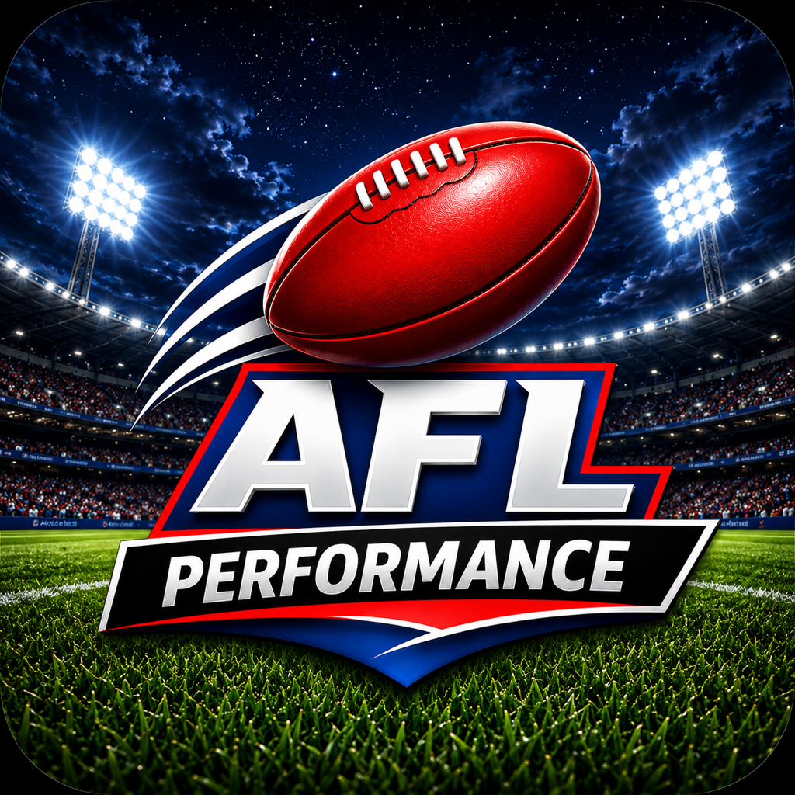

Compare AFL players
Review player information together to help you understand differences in recorded performance.
AFL PERFORMANCE BY SPORTZLABS
AFL Performance by SportzLabs is a sports analytics app for AFL fans who want to compare players, explore team dashboards and review performance trends. It brings statistics, charts and curated AFL news links into one place.
Use it to research player and team performance, including when considering your fantasy football or SuperCoach selections. The app provides information for your own analysis; it does not guarantee scores or selection outcomes.

Features
Review player information together to help you understand differences in recorded performance.
Use team dashboards and charts to put individual performances in a wider team context.
Follow curated news links to the original publisher for the full story and its context.
When comparing statistics, check the season, date and context shown in the app. Past results and trend signals do not predict a future match result.
AFL fans and people researching football player and team performance, including fantasy football and SuperCoach participants.
AFL Performance currently does not require an account. Open AFL Performance to explore the app.
No. AFL Performance provides sports information and analysis. It does not offer betting, wagering or prize contests.
Contact SportzLabs support with the player, team, statistic and date you were viewing. Include the displayed value and a screenshot if helpful.
AFL Performance is part of SportzLabs, the app brand at SportzLabs.com. Looking to record your own exercise instead? Explore Workout Studio, our workout planner and gym log.
Read our privacy information, age suitability guidance and support options.